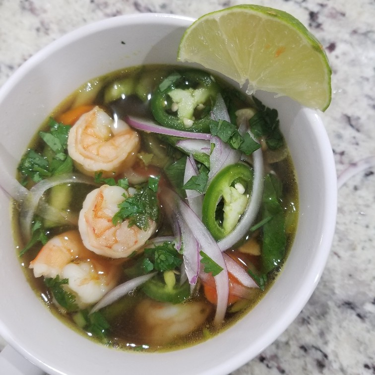

Shrimp and Bok Choy Noodle Soup
Originally From: NA

Ingredients
- Rice Noodle (Pho style)
- Shrimp
- Chicken Broth / Stock
- Soy Sauce
- Fish Sauce
- Ginger
- Garlic
- Cilantro
- Carrots
- Baby Bok Choy
- Red Onion
- Jalepeño
Directions
- Make broth base of soup, if making from "scratch". Add soy and fish sauce.
- Add carrots, sliced / chopped ginger, garlic, and cilantro. Cook 5-10 minutes
- Follow noodle directions - likely quick bath in boiling water then set aside
- Add bok choy and any jalepeño you want cooked to soup. Cook another few minutes
- Add shrimp. Once shrimp cooked through, serve over prepared noodles. Top with onion, jalepeño, cilantro, and lime.
Notes